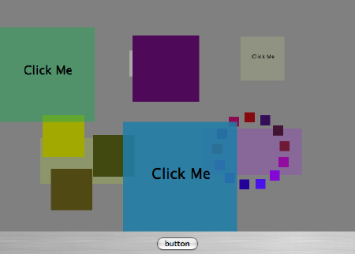

WordMerge: Portmanteau Generator for iPhone
Matt Handler and I built WordMerge, an iPhone app for creating new words like "stupidestrian" and "enchantelope".
It's based on Matt's website WerdMerge
but has some additional features such as saving "favorites" and viewing the latest "hot merges".
Website:
wordmergeapp.com.
PCollections: Persistent Java Collections
PCollections is meant to serve as a persistent and immutable
analogue of the Java
Collections Framework. This includes efficient, thread-safe, generic,
immutable, and persistent
stacks, maps, vectors, sets, and bags, compatible with their Java
Collections counterparts.
Persistent and immutable datatypes are increasingly appreciated as a simple, thread-safe,
and sometimes more time- and space-efficient alternative to mutable datatypes.
Website:
For files and documentation, see pcollections.org.
Transformable Penrose Tilings

After Bill McKenna told me about Junichi Yananose's Transformable Penrose Tilings, I wrote software to generate and simulate them. Included here are linkage files, movies, and the software used to generate the linkage files.
Files:
Linkage files (for use with the linkage simulator)
Quicktime movies
Python source code for generating Penrose linkages
Mechanical Linkages in Python

This software provides a graphical interface for simulating mechanical linkages.
Website:
For files and discussion, see the homepage.
Volumetric Rendering in OpenGL

This GLUT C program demonstrates volumetric rendering in OpenGL using 2d or 3d textures. (It also demonstrates the use of gluUnProject() for generating a pick ray.) It's the first thing I've written using OpenGL, but there seem to be precious few online examples of using GL_TEXTURE_3D, let alone rendering volumetric data, so here it is. Thanks to Keenan Crane for his help.
Files:
volumetric.tgz
Things

On the final day in a short introductory Java class at the Dalian University of Technology, the students modified a very simple Thing class to give it more interesting behavior.
Website:
Source code, a lab, and examples are at:
Things!
conductance 0.1
This Python module computes equivalent resistance or conductance in simple circuits. Furthermore, since any weighted graph can be considered as a network of resistors, this code can be used to provide a general graph distance metric.
Note that this module depends on the python modules numarray and pydot (which in turn requires pyparsing).
Files:
conductance.tgz
hungarian 0.2.1
This module is just a simple wrapper for a C++ implementation of Knuth's Hungarian algorithm, a.k.a. Munkres' algorithm, for the linear assignment problem.
Note that this module depends on the numpy module (or the older numarray module). You must install numpy before you can compile this module. Numpy can be downloaded from http://numpy.scipy.org
For a faster, but less tolerant, LAP algorithm see pyLAPJV below.
Links:
github.com/hrldcpr/hungarian (newest version)
hungarian-numarray.tgz (version 0.1.1; uses numarray, the precursor to numpy)
pyLAPJV 0.3.1
This Python module is just a simple wrapper for the C++ code written by Jonker to implement the Jonker-Volgenant algorithm, LAPJV, for the linear assignment problem.
Note that this module depends on the numpy module (or the older numarray module). You must install numpy before you can compile this module. Numpy can be downloaded from http://numpy.scipy.org
See the important notes in the included README.txt to properly use this algorithm. For a more tolerant, but slower, LAP algorithm see hungarian above.
If you have any problems with this module, you should email me (hrldcpr at gmail com), not Dr. Jonker.
Links:
github.com/hrldcpr/pyLAPJV (newest version)
pyLAPJV-numarray.tgz (version 0.2.3; uses numarray, the precursor to numpy)
Additional Information:
LAPJV comes from the paper:
R. Jonker and A. Volgenant, "A Shortest Augmenting Path Algorithm for Dense and Sparse Linear Assignment Problems," Computing, vol. 38, pp. 325-340, 1987.
According to that paper, it is notably faster than the Hungarian algorithm (a.k.a. Munkres' algorithm) and several other linear assignment algorithms.
The C++ source comes from:
http://www.magiclogic.com/assignment.html
This wrapper for the algorithm uses single precision (i.e. 32-bit) floating point arithmetic. To change it to double precision, integer, or anything else, simply change the corresponding types in lap.h.